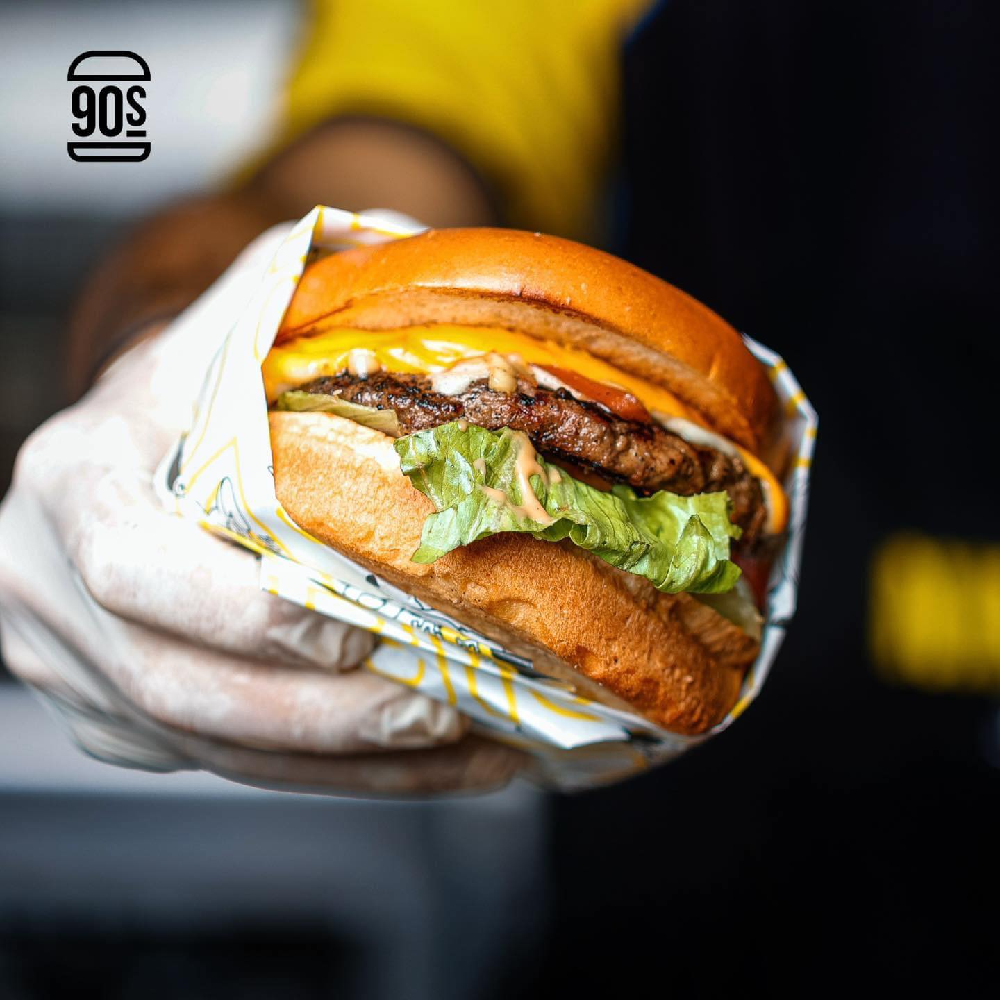

| Image | Dish Name | Description |
|---|---|---|
| Mashroom | A juicy beef patty topped with sautéed mushrooms, often paired with melted Swiss cheese for a rich, umami-packed flavor. It’s served on a toasted bun with fresh toppings and sometimes a creamy garlic aioli. | |
|  | bacon | zesty burger infused with Mexican spices, topped with ingredients like avocado, jalapeños, and melted cheese. It offers a flavorful kick with a mix of heat, creaminess, and crunch. |
| maxican | A classic burger featuring a beef patty topped with crispy bacon strips and melted cheese, adding a smoky, savory flavor. Often served with lettuce, tomato, and a tangy sauce for balance |